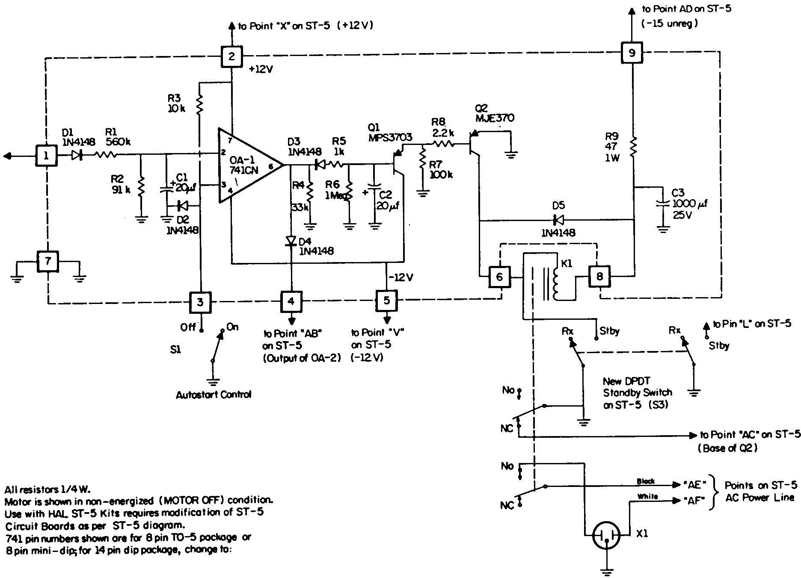

by IRVIN M. HOFF, W6FFC, June 1973
The ST-5 was designed to be as simple as an adequate demodulator could be. At the time it was offered, the ST 3 provided a modest-cost unit with autostart and motor delay. The ST-3 is now considered somewhat obsolete, partially because the General Electric PA-238 op amp is no longer available. After a number of people tried to modify their ST-5 for autostart by adapting portions of the ST-3 or ST-6, we decided to see if a simple autostart could not be de veloped directly for the ST-5.
The results have been quite satisfactory. One op amp and two transistors plus a relay have been used.
CHANGES TO THE ST-5
The only changes to the ST-5 needed to adapt the
autostart section are the addition of a 33K resistor and parallel
diode on the output of the slicer op amp. This is shown in the
upper-left corner of the diagram. This makes the output of the
slicer circuit identical to that of the ST-6. The input of the
autostart is marked "AA", and connects to the emitter
of the meter transistor.
ADJUSTMENTS:
There are literally no adjustments at all. The silicon
diode on the non- inverting input of the 741 holds the bias on
the op amp to approximately 0.7 volts. The divider network on the
inverting input allows the voltage with authentic RTTY signal
(properly tuned) to rise to approximately 0.9 volts. As the
voltage rises higher than 0.7, the output of the op amp switches
rapidly from positive output to negative output, turning the
motor on and removing the voltage on the base of the keyer stage
that was holding it in standby with no signal.
PROBLEMS TO CONSIDER:
There are a number of problems in designing a suitable
autostart system.
First, it should ignore voice or C.W. on the frequency. To do this we require it to respond only to signals which are the equivalent of at least 70-80% key down, continuously. So it will not turn off too quickly for static bursts, momentary interruptions, etc., we ask it to continue for about 1 second after the signal stops. (At 60 speed, this would print about 5-6 random garble characters.) With this in mind, the turn-on time then would need to be about 3-4 seconds, or the equivalent of about 20-22 characters. Finally, we hope it will be able to copy stations at least 40-50 Hz. off the frequency, assuming their shift is correct.
HOW IT WORKS:
With no signal, there will be a random voltage level
showing on the meter. This should be significantly less in
amplitude than the value shown on the meter when a signal is
present and tuned in for maximum indication.
With no signal, the voltage at the emitter of the meter transistor is passed to the autostart circuit through the diode, and then via the divider network charges up the 20 Mfd. capacitor. Due to the time constants involved, this voltage will not be as great as the 0.7 volts on the non-inverting input of the 741. Thus the op amp has positive voltage on its output. This is passed through one diode to point "AR" and holds the base of the keyer transistor in mark hold. At the same time, the other diode blocks this positive voltage at the output of the 741, thus the motor control circuit is not activated and the motor remains off.
When a signal appears, the voltage at the meter rises, thus the charge on the 20 Mfd. capacitor at the input to the 741 also rises. As it passes 0.7 volts, the op amp switches abruptly, and now has negative voltage on its output. The diode at AR now blocks this voltage, allowing the keyer transistor to print the incoming signal normally, and at the same time the other diode allows this negative voltage to pass, quickly charging the 20 Mfd. capacitor at the base of Q3. As Q3 conducts, it puts voltage on the base of Q4, allowing it to conduct, operating the relay and turning the printer motor on.
When the signal stops, the voltage on the 20 Mfd. motor capacitor bleeds off slowly, due to the high impedance of the emitter-follower circuit. Approximately 25-30 seconds later, the motor turns off. This delay may be shortened by lowering the value of the 1 M resistor in parallel with the 20 Mfd. capacitor, or by using a similar value of capacitor. This time was chosen to keep the motor from turning off prematurely if a person was sending compulsory CW identification, or was a little slow in turning on his transmitter.

TRANSISTORS:
Q2 is any high-voltage transistor capable of handling 300
volts or more. Several suitable choices are made by Delco,
International Rectifier, Motorola, the HEP line, RCA and others.
Several of those firms now make 450 volt transistors that are
small and low-cost.
Q3 is a PNP, and almost any silicon type should be suitable. A Motorola MPS-3703 is one suggestion and the 2N3906 is another.
Q4 is also a PNP, but here a high-current type should be used, as it will drive the relay. A good suggestion would be the Motorola MJE-370.
THE RELAY:
The relay is a 12 volt type with DPDT contacts rated at 10
amps. You could "get by" with 5 amp ratings, but the
surge current on the motor would be a bit hard on this type of
relay. A suitable relay would be the Potter & Brumfield
KA11DG. As this is a 12 volt relay and you will be using
unregulated "12 volts" to operate it, a series resistor
of 47 ohms is shown to keep the current to that recommended in
the relay. This resistor is only a suggested value and might need
to be changed. The higher voltage is advantageous as a
"starting kick" for the relay.
A diode is placed in parallel with the relay coil to prevent back EMF from the inductive spike from damaging the transistor when the relay opens.
AUTOSTART OFF SWITCH:
In the event the operator wishes to turn the autostart off,
S4 is closed.
STANDBY SWITCH:
The original standby switch was a SPST across the collector
and emitter of the keyer transistor. This is still adequate, but
at times the motor might turn off when transmitting, if the
receiver is carried in standby, prohibiting the audio signal from
operating the autostart. Changing the standby switch to a DPST
and using the second pole to ground the collector of the Q4
transistor will keep the motor on while transmitting. Quite often
you will not be exactly on the same frequency with your receiver
as you are transmitting on, and this will prevent the motor from
turning off.
Another possibility would be to use the second section to parallel S4 during standby, as this would provide similar results, but keep the 20 Mfd. motor delay capacitor charged up as well.
THE MOTOR JACK:
Many printers have 3-wire plugs, so we suggest you use a
polarized 3-way connector on the ST-5A. Many cases have been
reported where a printer is 120 volts with respect to other items
in the shack that are grounded. Using grounded connectors and
3-way wires to the printer should effectively prevent voltage
differences from appearing. We would also suggest your using a
3-way cable and connector on the ST-5A, as well. Be sure the jack
on the collector of Q2 for the teleprinter is insulated from
ground.
TURN-ON TIMES:
If the turn-on time and turn-off times do not seem
suitable, some adjustment can be made by changing the 91K
resistor to the next larger or next smaller size. However, 3-4
seconds is considered normal for this type of autostart, and this
is similar to the concept used on the other Mainline
demodulators. If you insist on having a faster turn-on time, you
could also use a smaller capacitor than the 20 Mfd. shown. That
would still retain the 70- 80% continuous key-down requirement to
ignore CW, etc.
CAUTION:
Be certain to use PNP type transistors for Q3 and Q4,
and note they connect to negative voltage. Also be careful to
orient the capacitor on the base of Q3 with its positive terminal
grounded!
CONCLUSION:
With only a minor modification existing ST-5 units, this
autostart may be readily added. Its simplicity is in keeping with
the design concept of the ST-5, which was to give adequate
performance from a very simple circuit. Adding the autostart
converts the ST-5 to a ST-5A. Boards and components for up-dating
the ST-5 or for building the ST-5A are available from Hal
Communications and from PEMCO. (See advertisements in the
classified section.) Autostart allows the operator to leave the
room temporarily, or even to monitor a frequency 24 hours a day,
unattended. Motor control makes the entire operation completely
automatic.